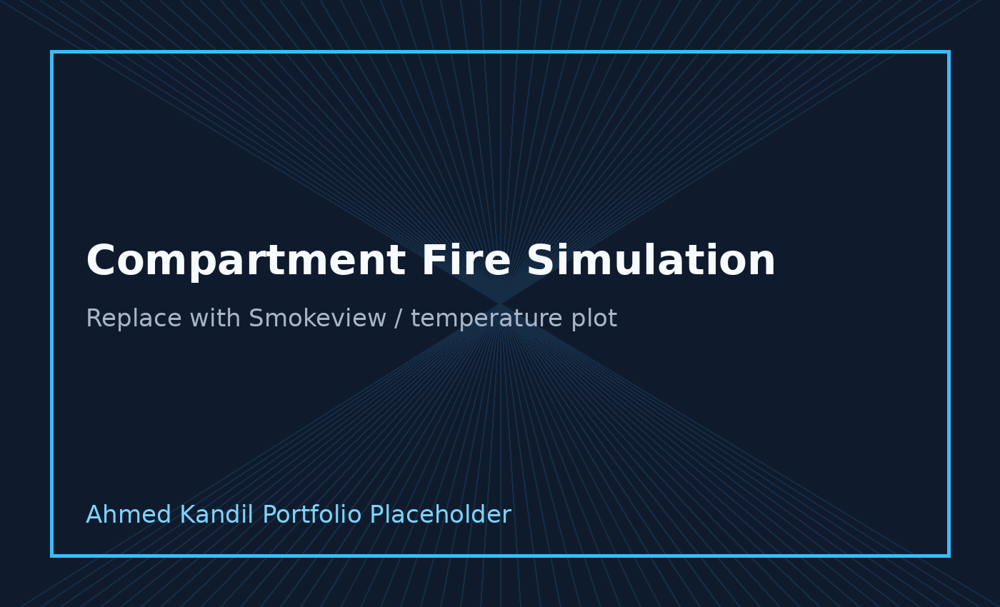

MATLAB Lid-Driven Cavity Solver
A 2D incompressible-flow solver using the SIMPLE algorithm on a staggered grid, including residual tracking, contours, streamlines, and validation plots.
View project →Computational Engineer · CFD · Scientific Computing
I am Ahmed Kandil, an M.Sc. Computer Simulation in Science student with experience in CFD, numerical methods, multiphase simulations, and engineering software development.
About
My work combines engineering physics, numerical methods, and programming. I have worked on CFD applications involving multiphase flow, thermal systems, Formula Student aerodynamics, fire dynamics, and custom solver development.
This portfolio presents selected projects with methodology, tools, results, and validation whenever possible.
Featured Projects
A 2D incompressible-flow solver using the SIMPLE algorithm on a staggered grid, including residual tracking, contours, streamlines, and validation plots.
View project →
Aerodynamic development of Formula Student vehicle concepts, including bodywork and front-wing design supported by CFD analysis.
View project →
FDS-based fire simulation with mesh sensitivity, smoke movement analysis, thermal field results, and comparison against experimental data.
View project →
Evacuation and crowd-flow analysis using JuPedSim and YOLO-based video processing for counting, flow-rate estimation, and scenario comparison.
View project →Experience
Student Research Assistant · Battery cell production and engineering research.
Working Student CFD · Multiphase flow simulation, thermal-fluid analysis, and automation.
Aerodynamics Head / Chief Engineer · Formula Student aerodynamic design and team leadership.
CFD Engineer · Simulation and design optimization using engineering CFD tools.
Skills
CFD, heat transfer, multiphase flow, fire dynamics, aerodynamics
STAR-CCM+, ANSYS Fluent, FDS, Smokeview, SimScale
MATLAB, Python, C/C++, Java automation, Git
OpenFOAM, MPI, OpenMP, CUDA, HPC benchmarking
Contact
I am interested in CFD, numerical simulation, scientific computing, and engineering R&D opportunities.